AI로 영상을 만드는 두 가지 길
AI로 영상을 만드는 방법을 발표자는 크게 둘로 나눠요. 이 영상에서 다루는 건 두 번째예요. 그리고 이 영상 자체도 처음부터 끝까지 코드로 만들었다고 해요.
첫 번째 길: 영상 생성 모델
아래 화면 왼쪽 상자가 프롬프트예요. '노을 진 언덕 위로 천천히 지는 해'라고 쓰면 가운데 AI가 받아서, 오른쪽처럼 장면과 움직임을 통째로 그린 영상 하나를 내놓아요. 사람이 손댈 수 있는 건 프롬프트뿐이에요.

두 번째 길: 코드로 움직이는 화면
두 번째 방법은 화면을 둘로 나눠 보여 줘요. 왼쪽 scene.js에 gsap.timeline(), tl.from('.title', …) 같은 코드가 몇 줄 있고, 오른쪽 'PREVIEW' 칸에서 그 코드대로 '움직이는 화면'이라는 글자와 점선 원이 움직여요. 이 화면을 녹화하면 그대로 영상이 돼요.
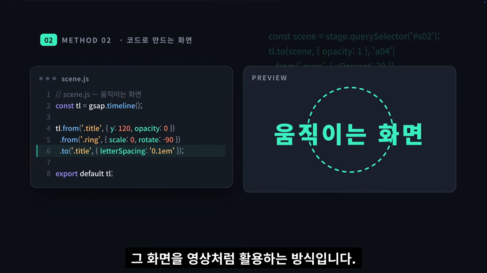
코드로 움직이는 화면이 낯설다면 평소 쓰는 웹사이트를 떠올리면 돼요. 발표자는 여행 사이트 예시를 띄우고 오른쪽에 세 가지를 꼽아요. 글자가 서서히 나타나고, 이미지가 움직이고, 스크롤하면 화면이 바뀌어요. 다 코드가 만든 움직임이에요.
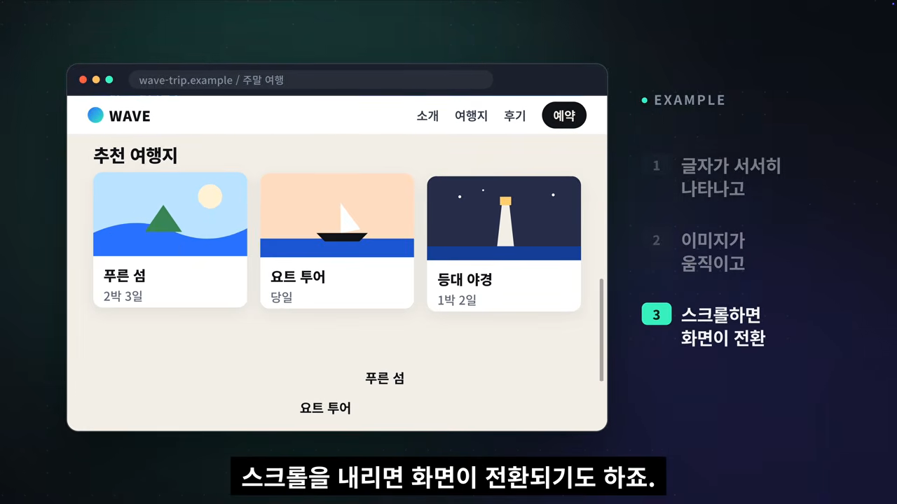
웹에서 움직임을 만드는 기술들
그럼 웹에서는 무엇으로 움직임을 만들까요? 기본 재료 세 가지 위에 전문 도구 다섯 가지를 얹는 구조예요.
기본 재료: HTML, CSS, JavaScript
화면의 세 카드가 각자 맡은 일을 적어 놨어요. HTML(HyperText Markup Language)은 구조, CSS(Cascading Style Sheets)는 모양, JavaScript는 움직임이에요. CSS만으로도 글자를 나타내거나 사라지게 하고, 이미지를 옮기고 키우고 돌릴 수 있어요. 더 정교한 움직임이 필요하면 JavaScript로 직접 프로그래밍해요.
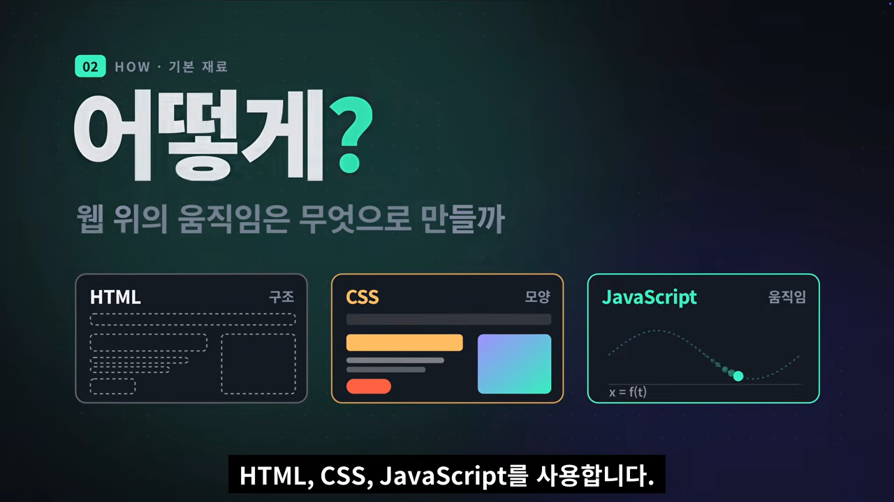
전문 도구 다섯 가지
움직임을 처음부터 다 짤 필요는 없어요. 화면 아래 작은 글씨가 각 도구의 전문 분야예요. GSAP은 애니메이션, SVG는 벡터 그래픽, Canvas는 픽셀 그리기, Three.js는 3D 공간, WebGL·WebGPU는 GPU(Graphics Processing Unit) 효과예요.

GSAP은 여러 움직임의 순서와 타이밍을 다뤄요. 아래 화면을 보면 V1 글자, V2 도형, V3 다음 장면, A1 소리 트랙이 있고, '나타나기', '확대', '덮기', '넘어가기' 블록이 시간축에 놓여 있어요. 글자가 나타나고, 도형이 커져서 화면을 덮고, 다음 장면으로 넘어가는 흐름이에요.

SVG로는 선, 도형, 아이콘 같은 벡터 그래픽을 직접 그리고 움직여요. 화면의 도시 윤곽선은 한 줄의 선이 따라가며 그려지는 효과예요. 도형이 자연스럽게 다른 모양으로 바뀌는 애니메이션에도 좋아요.
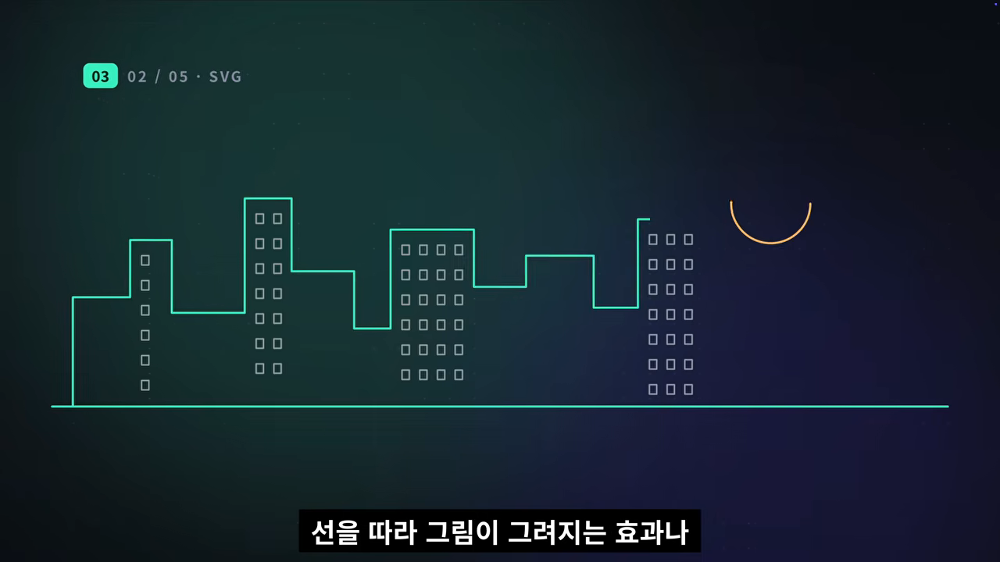
Canvas는 더 자유로워요. 화면에 색색의 점 수백 개가 원을 그리며 흩어져 있어요. 이렇게 많은 요소를 직접 그리면서 흩어지고 튕기고 서로 반응하게 만들어요.

Three.js를 쓰면 브라우저 안에 3D 공간이 생겨요. X·Y·Z 축 위에 여러 도형이 떠 있고, 아래 칩 세 개가 할 일을 정리해요. 오브젝트 배치, 조명, 카메라예요. 카메라를 움직이면 실제 촬영처럼 공간 안을 이동하는 장면이 돼요.
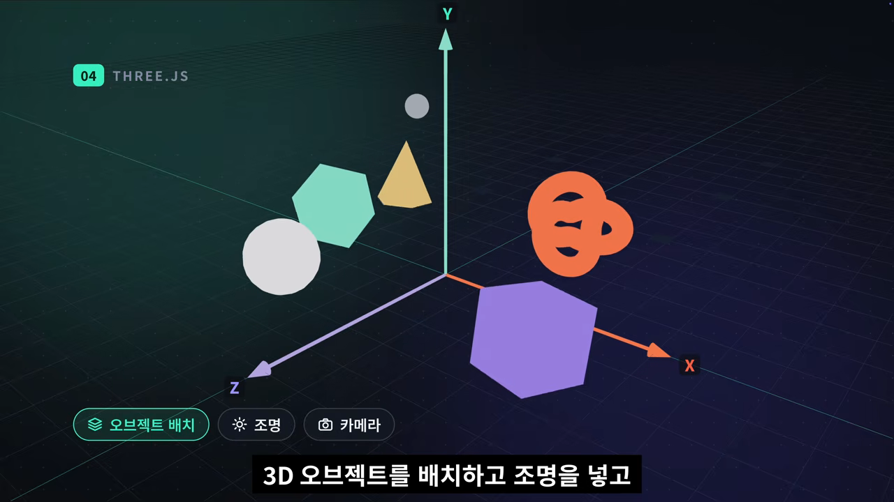
더 복잡한 시각 효과는 WebGL·WebGPU의 몫이에요. 화면 아래 칩이 빛, 왜곡, 물결, 셰이더, 대량의 파티클을 나열해요. 가운데 퍼지는 빛줄기가 그 예시예요.
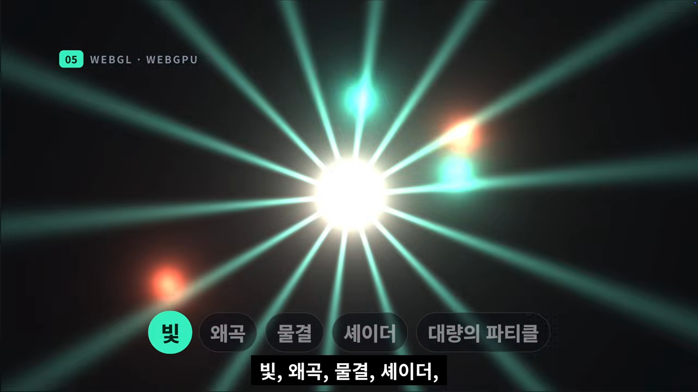
이걸 조합하면 웹은 네 칸 화면처럼 2D 모션 그래픽, 파티클 효과, 3D 애니메이션, 카메라 연출을 모두 하는 영상 제작 환경이 돼요. 발표자는 여기에 한 가지를 덧붙여요. 클로드가 이런 코드를 꽤 잘 쓴다는 점이에요.
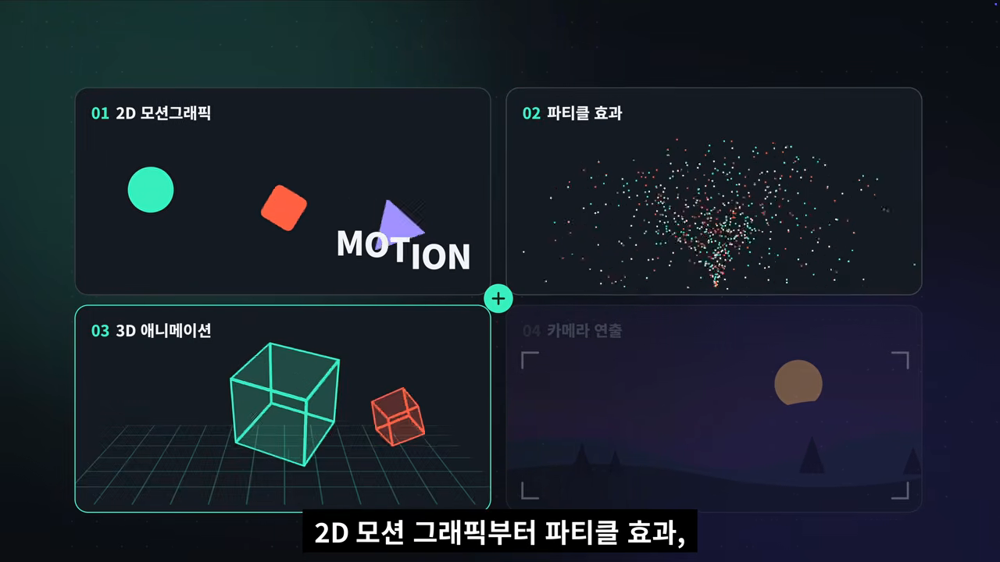
클로드 코드로 직접 만들어 보기
클로드에 영상 만들기 기능이 새로 생긴 건 아니에요. 영상이 결국 코드라서, 원래 잘하던 코딩으로 만드는 거예요. 그래서 할 일은 프롬프트를 넣는 것뿐이에요.
프롬프트 한 번
터미널 맨 위를 보면 Claude Code v2.1.289, 'Opus 5.5 with xhigh effort'라고 적혀 있어요. 그 아래 회색 줄이 발표자가 넣은 프롬프트예요. 첫 줄이 주제예요. 「웹은 역동적인 모션그래픽을 표현하기에 가장 적합한 환경이다」를 주제로 약 10초 분량을 만들라고 했어요. 둘째 줄은 단순 반복 애니메이션이 아니라 여러 장면이 순서대로 이어지는 짧은 영상처럼 짜라는 주문이에요.

같은 프롬프트의 뒷부분을 크게 띄운 화면이에요. 초록 강조 세 곳이 핵심 조건이에요. 키네틱 타이포그래피를 적극적으로 쓰고, 폰트는 'SIL Open Font License 1.1(SIL OFL 1.1)'이 붙은 것만 쓰고, 결과물은 브라우저에서 바로 실행되는 웹페이지로 달라는 조건이에요. 프롬프트 길이는 766자예요.
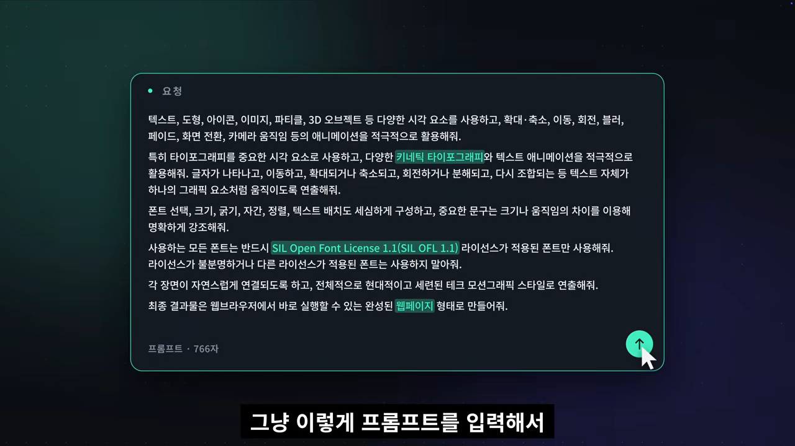
나온 결과
결과는 web-motion/index.html이라는 웹페이지예요. 오른쪽 위에 '1920 × 1080 · 60 FPS · 10.0s', 오른쪽 아래에 'Webmotion Line · SIL OFL 1.1'이 보여요. 가운데 '모션그래픽을'처럼 큰 글자가 차례로 나타나며 주제 문장을 만들어요.
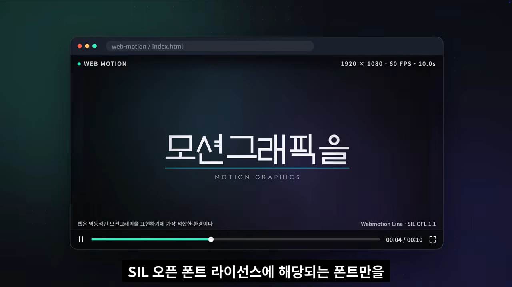
폰트가 없으면 직접 만들어요
발표자는 이 폰트가 어디서 왔는지 궁금해서 클로드의 응답을 확인했어요. 오른쪽 응답 패널의 '사용한 글꼴' 칸에 '직접 만든 서체 · SIL OFL 1.1'이라고 적혀 있어요.

응답 원문이 화면 맨 위에 있어요. 과제는 OFL(Open Font License) 1.1 폰트만 쓰라고 했지만, 프로젝트 지침 파일 AGENTS.md는 외부 폰트 파일을 OFL이라도 금지했어요. 그래서 서체 'Webmotion Line'을 코드로 직접 설계하고 OFL 1.1로 지정해 두 조건을 다 맞췄다고 해요. 아래 'FONT EDITOR' 화면은 '글' 자를 'ASCENT', 'MIDDLE', 'BASELINE' 기준선에 맞춰 선 몇 개로 그린 모습이에요.
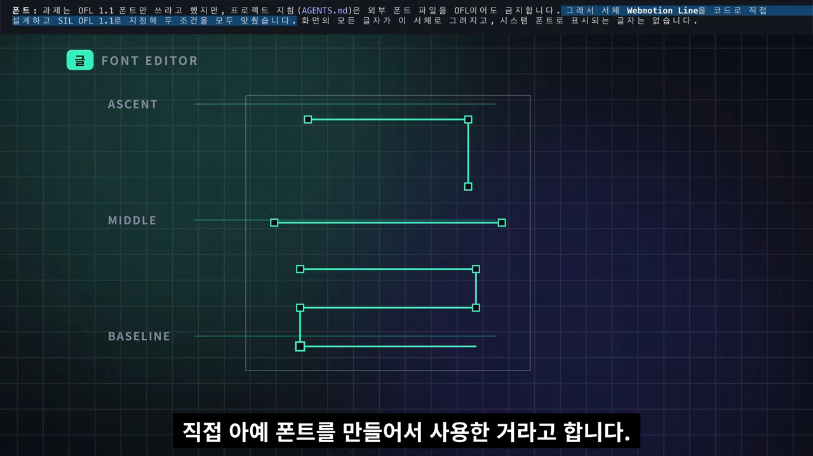
왜 이런 일이 생겼는지 화면이 정리해 줘요. 왼쪽 첫 번째 규칙은 'OFL 폰트만', 오른쪽 두 번째 규칙은 '외부 자료 금지'예요. 두 규칙이 가운데를 양쪽에서 밀어서 '표시할 글꼴이 없다'는 빈칸이 생겼어요. 발표자는 외부 자료를 쓰지 말라는 자기 지침 때문에 어쩌다 극단적인 요구가 됐다고 말해요.
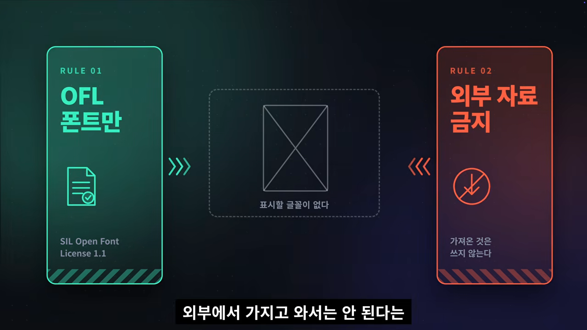
클로드는 막히는 대신 새 글꼴을 만들고 거기에 OFL 1.1을 붙이는 쪽을 택했어요. 화면에는 '글꼴 해결' 체크 표시와 'OFL 1.1' 꼬리표가 떠요.
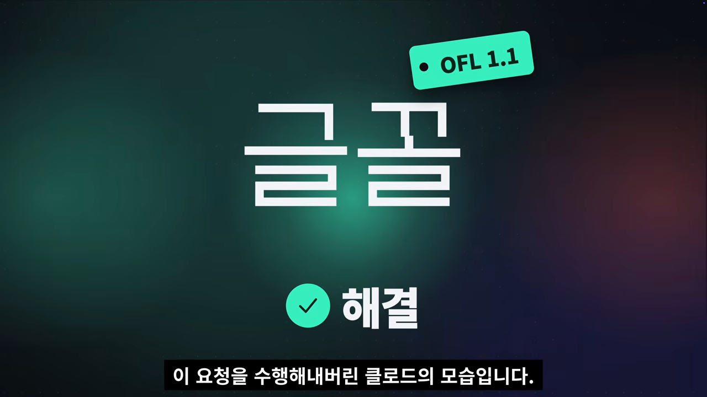
고치기 쉽고, 해상도도 고를 수 있어요
코드로 만든 영상에는 생성 모델 영상과 다른 성질이 두 가지 있어요. 부분만 고칠 수 있다는 점, 그리고 내보낼 때 해상도를 고를 수 있다는 점이에요.
전체를 다시 뽑지 않고 일부만 고쳐요
화면이 둘로 나뉘어 있어요. 왼쪽 A는 생성 모델로 만든 영상이에요. 고치려고 '다시 생성'을 누르면 v2가 나오는데, 노을이 별밤으로 바뀌었어요. 빨간 글씨대로 영상 전체가 새로 바뀌어요. 오른쪽 B는 코드로 만든 영상이에요. 아래 scene.js에 sun.fill, sun.radius = 80, title.text = '여름 노을'처럼 장면의 값이 한 줄씩 있어서, 그 줄만 바꾸면 돼요.
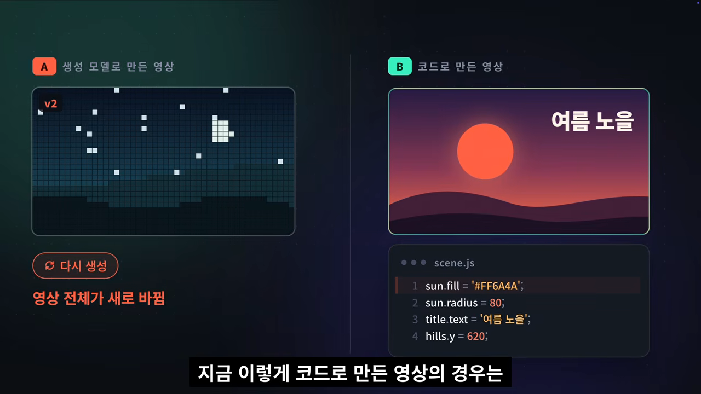
| 영상 생성 모델 | 코드로 만든 영상 | |
|---|---|---|
| 만드는 방식 | 프롬프트로 장면과 움직임을 통째로 생성 | 웹 코드로 움직이는 화면을 짜고 녹화 |
| 고칠 때 | 바뀐 요구 사항으로 영상 전체를 다시 생성 | 해당 부분의 코드만 수정 |
| 글자 | 망가지는 경우가 있음 | 실수가 거의 없음 |
| 해상도 | 화소로 고정 | 내보낼 때 크기를 정함 (구현 방식에 따라 다름) |
실제로 고쳐 본 장면이에요. 오른쪽 '요청 · 응답' 칸을 보면 발표자가 '상단·하단 문구 없애줘'라고 했고, 클로드가 '상단과 하단을 지웠어요'라고 답했어요. 왼쪽 미리보기에서 위아래 글자가 사라졌어요.
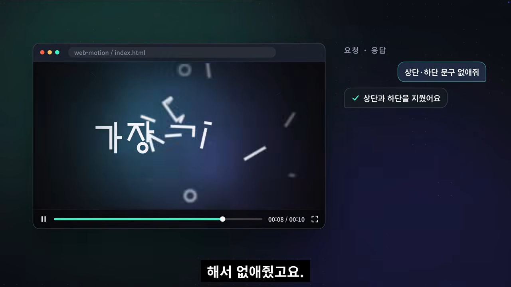
다음은 재생 바예요. 미리보기용으로 아래에 붙여 준 재생 조작 바는 영상에 찍히면 안 되겠죠. 빨간 X가 그 바를 가리키고, 오른쪽에 '재생 바도 함께 없애줘' 요청이 하나 더 쌓였어요.
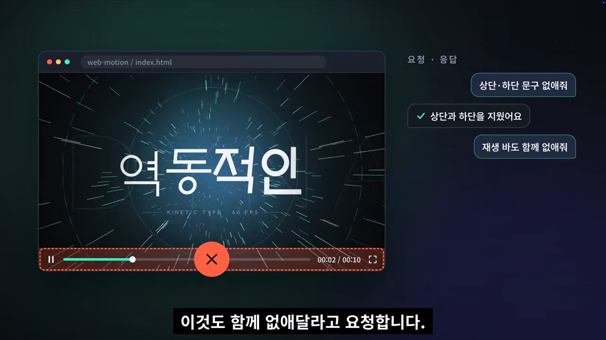
MP4로 바꾸기
최종 결과는 MP4로 바꿔 써야 해요. 이것도 요청하면 돼요. 오른쪽 대화 마지막 두 줄이 'mp4로 변환해줘', '4K, 60fps로 부탁해'예요. 왼쪽에 .mp4 파일이 98%까지 만들어지고 있고, 가운데에 4K 3840 × 2160, 60fps가 크게 적혀 있어요.
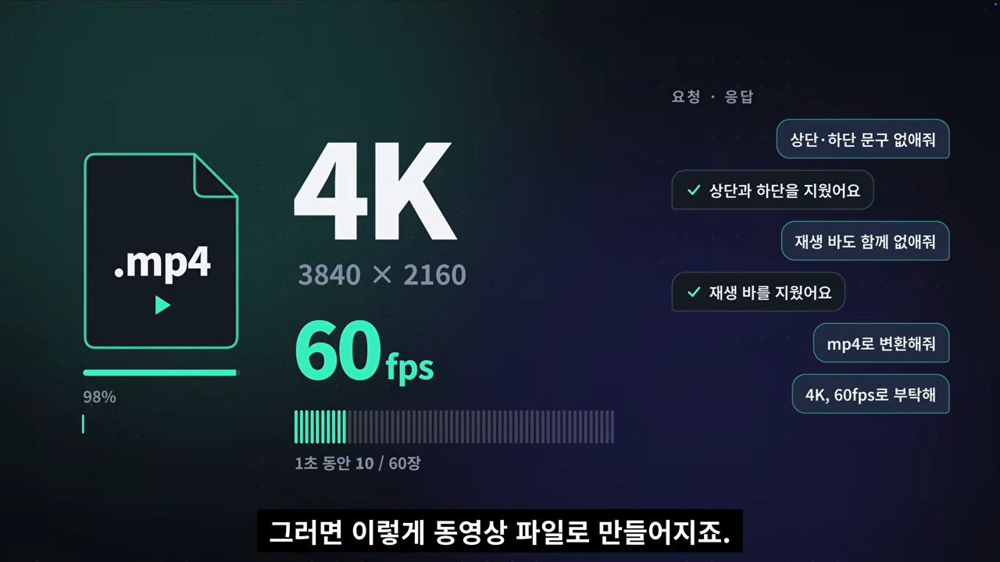
해상도를 내보낼 때 정해요
MP4 같은 영상은 작은 화소가 모여 이뤄져요. 4K는 가로 3,840개, 세로 2,160개, 장면 하나에 약 830만 개 화소예요. 아래 화면은 화소로 그린 원의 가장자리를 9배 키운 모습이에요. 경계가 계단처럼 흐릿하게 뭉개졌어요. 아주 큰 스크린에 띄우면 이렇게 선이 흐려질 수밖에 없어요.
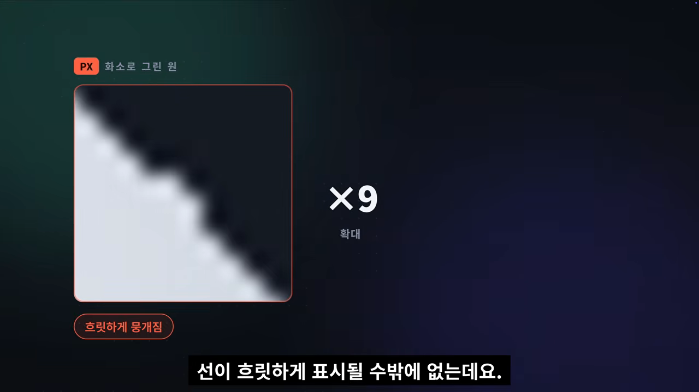
웹으로 만든 영상은 구현 방식에 따라 다르지만, 많은 경우 화면을 점·선·면 같은 요소의 수치로 표현해요. 아래 화면의 선은 '(440, 320) → (1240, 440)'이라는 좌표로 정의돼 있고, 왼쪽 아래 칩에 '크기를 키워도 선명'이라고 적혀 있어요. 그래서 오른쪽 내보내기 창처럼 1080p, 4K, 8K 중 원하는 크기를 골라 MP4로 뽑을 수 있어요.
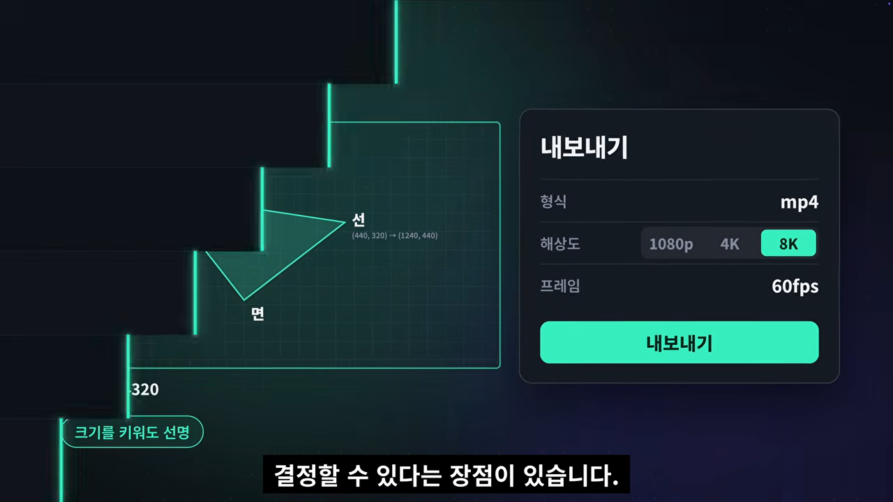
처음부터 MP4까지 한눈에
flowchart LR A["프롬프트
주제·조건"] --> B["클로드 코드
웹 코드 작성"] B --> C["브라우저에서
재생해 보기"] C -->|"고칠 점 요청"| B C -->|"마음에 들면"| D["MP4 변환
4K · 60fps"]
코드로 만든 영상의 세 가지 장점
이번 예시는 한 줄 주제만 준 거예요. 구체적인 기획이나 대본이 있으면 그걸 넘겨서 영상으로 만들어 달라고 해도 돼요. 화면 왼쪽 기획서에는 메시지, 대상·톤, 장면 구성, 스타일, 길이 칸이 있고, 화살표 오른쪽으로 '역동적인 웹' 영상이 나와요.
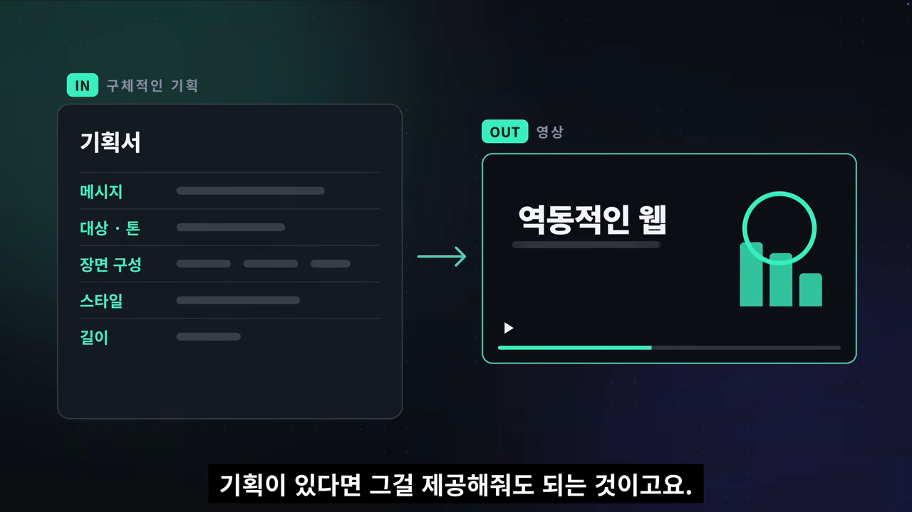
이어서 발표자는 이 방식의 장점을 세 가지로 정리해요. 화면 위 칩 세 개가 그 순서예요. 정확한 글자, 쉬운 제작, 스스로 개선이에요.
01 정확한 글자
AI로 이미지나 영상을 만들어 본 사람은 글자가 망가지는 걸 겪어 봤을 거예요. 아래 왼쪽은 AI로 생성한 가게 간판이에요. '행복한 빵집'이 획이 뒤틀린 글자로 바뀌었어요. 오른쪽은 같은 간판을 코드로 그린 화면이에요. index.html의 <h1 class="sign">행복한 빵집</h1> 한 줄이 그대로 화면에 찍혀서 글자가 틀릴 수 없어요.
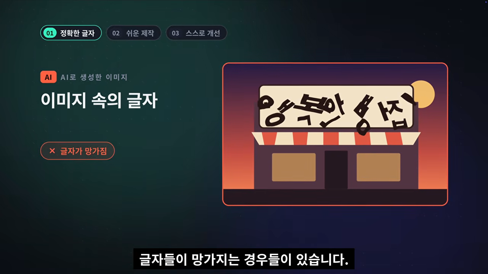
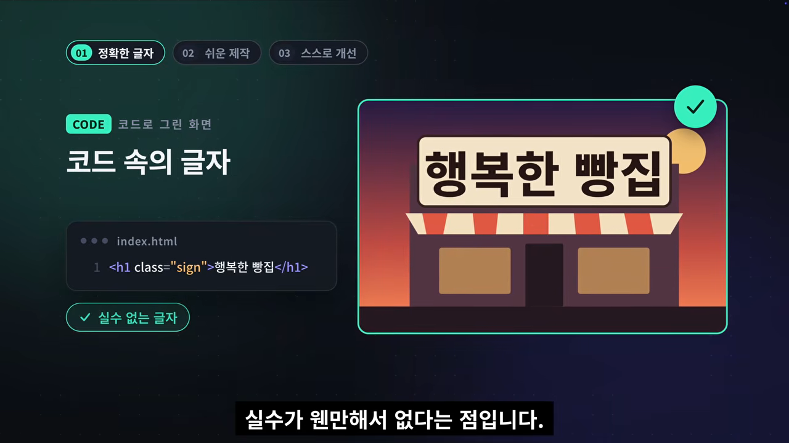
발표자는 오타 확률을 AI 답변에 오타가 섞일 확률 정도로 보면 된다고 해요. 그래서 이 방식은 글자가 많은 설명 영상에 특히 강해요. 아래 화면이 그런 설명 장면의 예예요. 오른쪽에 '글자가 많을수록 더 빛나는 방식', '텍스트 요소 13개 · 오타 0개'라고 적혀 있어요.
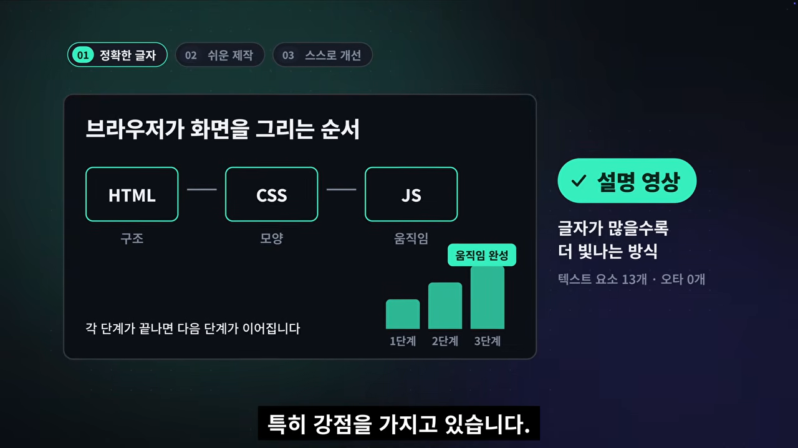
02 쉬운 제작, 그리고 눈으로 하는 검증
만들려는 건 영상이지만, 과정은 앱이나 웹사이트처럼 바이브 코딩이에요. 영상도 코드니까요. 여기에 큰 편리함이 하나 따라와요. 바이브 코딩으로 만든 앱은 겉으로 멀쩡해 보여도 속에 문제가 숨어 있을 수 있어요. 아래 화면의 가계부 앱은 '정상 작동' 표시가 붙어 있지만, 옆으로 이어진 상자에 '보안 문제: 비밀번호가 그대로 노출된다', '데이터 처리 오류: 합계가 조용히 틀린다'가 적혀 있어요.
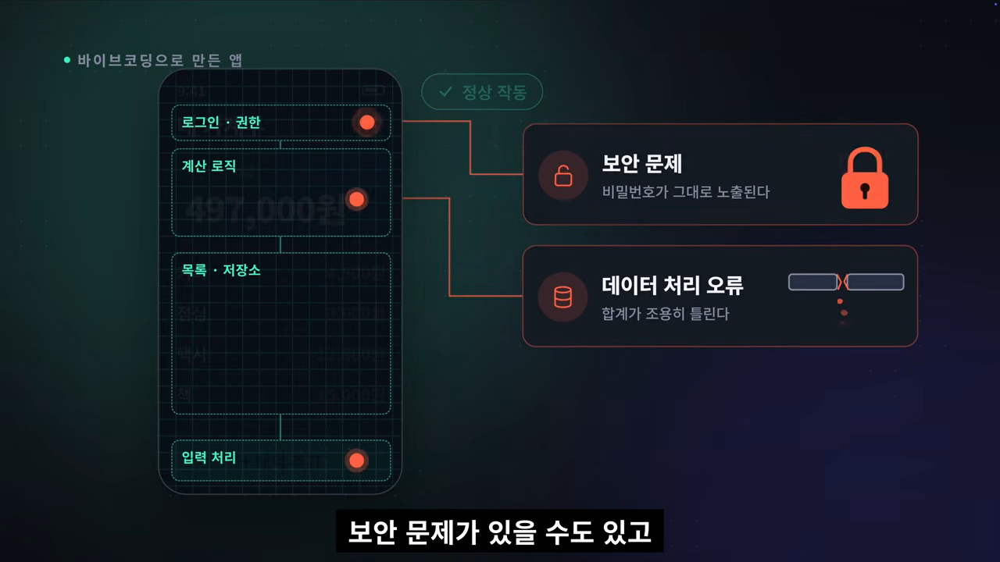
영상은 사정이 달라요. 최종 결과물이 눈에 보이는 화면과 움직임 그 자체라서, 보기에 문제가 없으면 문제가 없는 거예요. 아래 화면 오른쪽 목록이 '눈으로 바로 보이는 문제'예요. 움직임이 어색하다, 글자가 너무 작다, 장면이 너무 빠르다·구성이 어긋났다. 왼쪽 영상 위의 빨간 느낌표가 그 문제들이 생긴 자리예요.
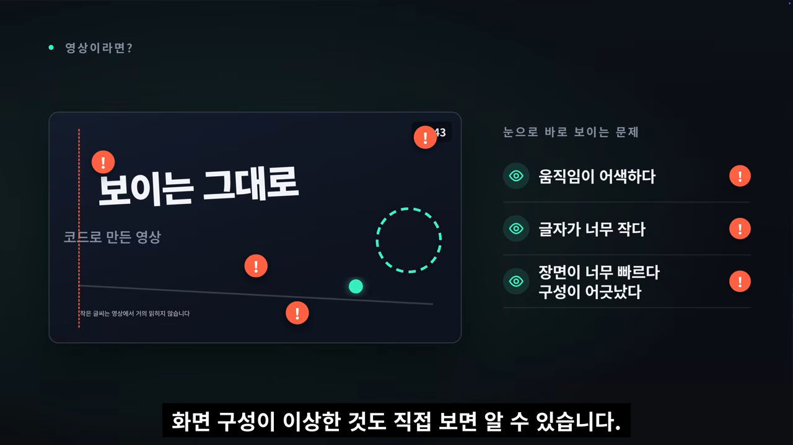
| 바이브 코딩으로 만든 앱 | 바이브 코딩으로 만든 영상 | |
|---|---|---|
| 결과물 | 겉 화면 + 보이지 않는 속 동작 | 보이는 화면과 움직임이 전부 |
| 숨을 수 있는 문제 | 보안 문제, 데이터 처리 오류, 특정 상황 오류 | 보기에 문제없으면 문제없는 것 |
| 확인 방법 | 개발 지식이 있어야 판단 가능 | 눈으로 보고 판단 |
03 스스로 개선
이번 예시는 한 번에 꽤 괜찮게 나왔지만, 보통은 첫 시도에 마음에 드는 결과가 나오지 않아요. 발표자는 AI에게 영사기 그림을 보고 SVG로 따라 그리게 한 예를 보여 줘요. 왼쪽이 참조 이미지, 오른쪽이 1차 시도예요. 원 두 개와 기울어진 상자만 대충 그린 빨간 윤곽선이에요.
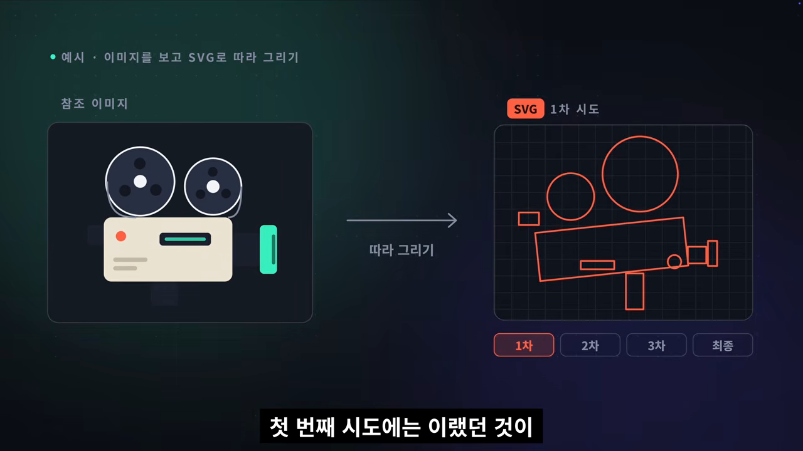
AI가 결과물을 여러 번 확인하며 고친 끝에 나온 최종본이에요. 아래 탭에서 '최종'이 초록으로 켜져 있고, 오른쪽 그림이 왼쪽 참조 이미지와 거의 같아졌어요.

영상도 똑같이 해요. 결과물을 계속 되돌아보게 하면 품질이 올라가요. 화면은 이걸 만들기 → 보기 → 고치기 고리로 그렸고, 오른쪽 품질 막대가 63%에서 96%까지 차올라요.
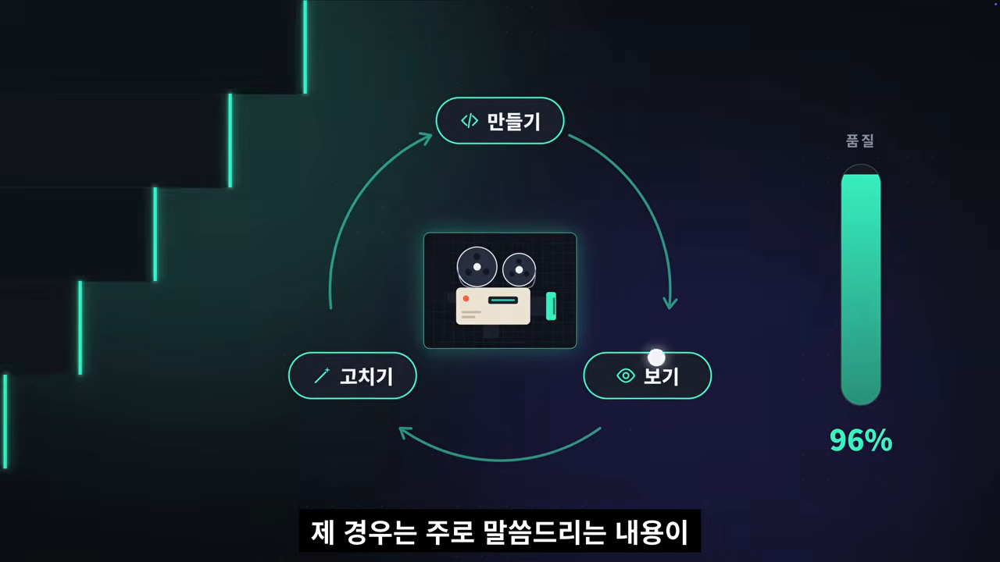
발표자가 이 방법을 쓰는 이유
발표자의 채널은 추상적이고 개념적인 내용을 많이 다뤄서 자료 화면이 자주 필요해요. 설명을 돕는 정적인 이미지보다 영상이 전달력이 좋다고 봐서 요즘 이 방법을 많이 쓴다고 해요. 같은 생각을 하는 크리에이터가 늘면 영상 콘텐츠 전반의 품질도 올라갈 거라고 기대해요.
결론적으로 콘텐츠 만들기 더 편해졌습니다.
— 영상 08:52